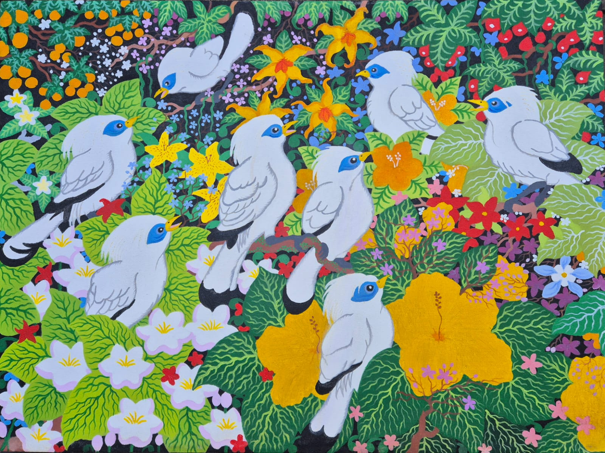

Burung Jalak Bali
2018About the Artwork
This is a vibrant painting of Bali Starlings (Leucopsar rothschildi), a species of endemic chirping birds found only in the western forest of Bali Island. It features these elegant birds, colorful flowers and patterned leaves with a very distinct artstyle. The artist uses Winsor & Newton oil paints aswell as Van Gogh oil paints for this painting.
About the Artist
Winda Karunadhita is a Balinese painter living in Singaraja, Bali. She is a self-taught artist who is known for her vibrant traditional and contemporary art. Despite living with muscular dystrophy, she still manages to create beautiful artworks that are enjoyed by people all over the world. Her paintings often tell about the environment, flora and fauna nature. Her work has been part of numerous exhibitions in countries such as Australia, Indonesia, Taiwan and even the United Kingdom. Not only does she actively participate in national exhibitions, but she is also active in charity, helping others who are also struggling with disablities. Her kindness and resilience shows that true strength comes from the heart, inspiring others through courage and compassion.